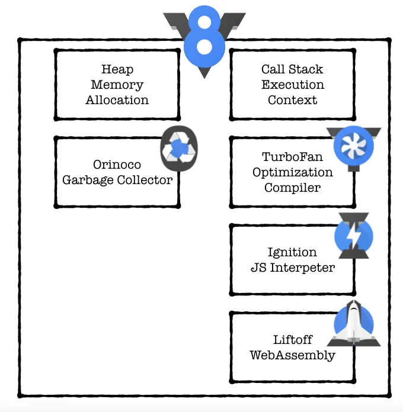
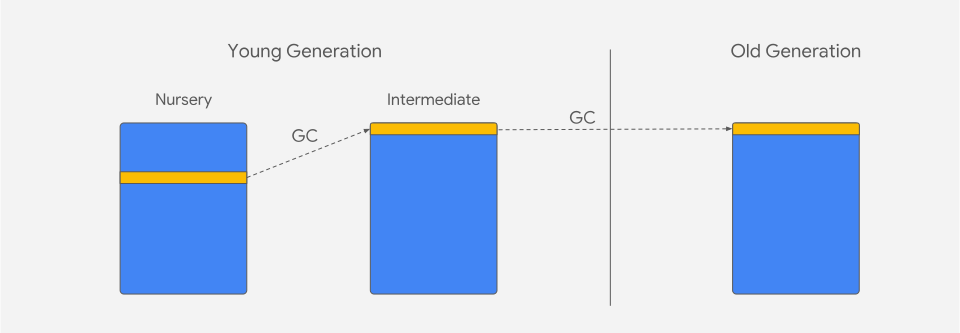

垃圾回收
# 垃圾回收 engine - Blink:["Google Chrome", "Microsoft Edge","Opera","Samsung Internet"] - Gecko: "Mozilla Firefox" - WebKit: "Apple Safari"

codeName(代号)
TurboFan(涡轮发动),
Ignition(点火装置)
Liftoff(起飞)
Orinoco(奥里诺科河derived from Guarauno words meaning “a place to paddle”—i.e., a navigable place. (可以通航的地方)
major GC-Orinoco(奥里诺科河): sequential, stop-the-world garbage collector
minor of GC - scavenger(食腐动物): parallel and concurre,incremental fallback
name origin
V8的名字来源于汽车的“V型8缸发动机”（V8发动机）.V8引擎的命名是Google向用户展示它是一款强力并且高速的JavaScript引擎
major GC
The major GC collects garbage from the entire heap. 主要 GC 从整个堆中收集垃圾。
Perceptions of Garbage Collection

Any garbage collector has a few essential tasks that it has to do periodically: 任何垃圾收集器都有一些必须定期执行的基本任务：
- Identify live/dead objects 识别活/死物体
- Recycle/reuse the memory occupied by dead objects 回收/重用死对象占用的内存
- Compact/defragment memory (optional) 压缩/碎片整理内存（可选）
These tasks can be performed in sequence or can be arbitrarily interleaved. A straight-forward approach is to pause JavaScript execution and perform each of these tasks in sequence on the main thread. This can cause jank and latency issues on the main thread, which we’ve talked about in previous blog posts, as well as reduced program throughput. 这些任务可以按顺序执行，也可以任意交错执行。一种直接的方法是暂停 JavaScript 执行并在主线程上按顺序执行每个任务。这可能会导致主线程出现卡顿和延迟问题（我们在之前的博客文章中已经讨论过），并降低程序吞吐量
Marking 标记
Figuring out which objects can be collected is an essential part of garbage collection. Garbage collectors do this by using reachability as a proxy for ‘liveness’. This means that any object currently reachable within the runtime must be kept, and any unreachable objects may be collected. 弄清楚哪些对象可以被收集是垃圾收集的重要组成部分。垃圾收集器通过使用可达性作为“活跃度”的代理来做到这一点。这意味着必须保留运行时中当前可到达的任何对象，并且可以收集任何不可到达的对象
Sweeping 扫地
Sweeping is a process where gaps in memory left by dead objects are added to a data structure called a free-list. Once marking has completed, the GC finds contiguous gaps left by unreachable objects and adds them to the appropriate free-list. Free-lists are separated by the size of the memory chunk for quick lookup. In the future when we want to allocate memory, we just look at the free-list and find an appropriately sized chunk of memory. 清理是一个过程，其中死对象留下的内存间隙被添加到称为空闲列表的数据结构中。标记完成后，GC 会找到无法访问的对象留下的连续间隙，并将它们添加到适当的空闲列表中。空闲列表按内存块的大小分隔，以便快速查找。将来当我们想要分配内存时，我们只需查看空闲列表并找到适当大小的内存块即可。
Compaction 压实
The major GC also chooses to evacuate/compact some pages, based on a fragmentation heuristic. You can think of compaction sort of like hard-disk defragmentation on an old PC. We copy surviving objects into other pages that are not currently being compacted (using the free-list for that page). This way, we can make use of the small and scattered gaps within the memory left behind by dead objects. 主要 GC 还根据碎片启发法选择疏散/压缩某些页面。您可以将压缩想象为旧电脑上的硬盘碎片整理。我们将幸存的对象复制到当前未压缩的其他页面中（使用该页面的空闲列表）。这样，我们就可以利用死亡对象在内存中留下的小而分散的间隙。
主要 GC 还根据碎片启发法选择疏散/压缩某些页面。您可以将压缩想象为旧电脑上的硬盘碎片整理。我们将幸存的对象复制到当前未压缩的其他页面中（使用该页面的空闲列表）。这样，我们就可以利用死亡对象在内存中留下的小而分散的间隙。
One potential weakness of a garbage collector which copies surviving objects is that when we allocate a lot of long-living objects, we pay a high cost to copy these objects. This is why we choose to compact only some highly fragmented pages, and just perform sweeping on others, which does not copy surviving objects. 复制幸存对象的垃圾收集器的一个潜在弱点是，当我们分配大量长期存在的对象时，我们会付出高昂的成本来复制这些对象。这就是为什么我们选择只压缩一些高度碎片化的页面，而只对其他页面执行扫描，这不会复制幸存的对象
Gerational layout 分代布局
Note
stack分配固定大小的值
heap分配可变大小的值
The heap in V8 is split into different regions called generations. There is a young generation (split further into ‘nursery’ and ‘intermediate’ sub-generations), and an old generation. Objects are first allocated into the nursery. If they survive the next GC, they remain in the young generation but are considered ‘intermediate’. If they survive yet another GC, they are moved into the old generation. V8 中的堆被分为不同的区域，称为代。有年轻一代（进一步分为“幼儿”和“中间”子代）和老一代。对象首先被分配到托儿所中。如果它们在下一次 GC 中幸存下来，它们仍保留在年轻代中，但被视为“中间”。如果它们在另一次 GC 中幸存下来，它们就会被移入老年代。

In garbage collection there is an important term: “The Generational Hypothesis”. This basically states that most objects die young. In other words, most objects are allocated and then almost immediately become unreachable, from the perspective of the GC. This holds not only for V8 or JavaScript, but for most dynamic languages. 在垃圾收集中有一个重要的术语：“世代假设”。这基本上表明大多数物体都会在年轻时死亡。换句话说，从 GC 的角度来看，大多数对象被分配后几乎立即变得不可访问。这不仅适用于 V8 或 JavaScript，也适用于大多数动态语言。
V8’s generational heap layout is designed to exploit this fact about object lifetimes. The GC is a compacting/moving GC, which means that it copies objects which survive garbage collection. This seems counterintuitive: copying objects is expensive at GC time. But we know that only a very small percentage of objects actually survive a garbage collection, according to the generational hypothesis. By moving only the objects which survive, every other allocation becomes ‘implicit’ garbage. This means that we only pay a cost (for copying) proportional to the number of surviving objects, not the number of allocations. V8 的分代堆布局旨在利用有关对象生命周期的这一事实。 GC 是压缩/移动 GC，这意味着它会复制在垃圾回收中幸存下来的对象。这似乎违反直觉：在 GC 时复制对象的成本很高。但我们知道，根据分代假设，只有极小比例的对象实际上在垃圾回收中幸存下来。通过仅移动幸存的对象，所有其他分配都会变成“隐式”垃圾。这意味着我们只需支付与幸存对象数量成比例的成本（用于复制），而不是与分配数量成比例。
Minor GC (Scavenger:食腐动物,清道夫)
There are two garbage collectors in V8. The Major GC (Mark-Compact) collects garbage from the whole heap. The Minor GC (Scavenger) collects garbage in the young generation. The major GC is effective at collecting garbage from the whole heap, but the generational hypothesis tells us that newly allocated objects are very likely to need garbage collection. V8 中有两个垃圾收集器。 Major GC（Mark-Compact）从整个堆中收集垃圾。 Minor GC（Scavenger）收集年轻代中的垃圾。 Major GC 可以有效地从整个堆中收集垃圾，但分代假设告诉我们，新分配的对象很可能需要垃圾收集
The evacuation step moves all surviving objects to a contiguous chunk of memory (within a page). This has the advantage of completing removing fragmentation - gaps left by dead objects. We then switch around the two spaces i.e. To-Space becomes From-Space and vice-versa. Once GC is completed, new allocations happen at the next free address in the From-Space. 疏散步骤将所有幸存的对象移动到连续的内存块（在一个页面内）。这样做的优点是可以完成消除碎片——死对象留下的间隙。然后我们切换两个空间，即“To-Space”变为“From-Space”，反之亦然。一旦 GC 完成，新的分配就会发生在 From-Space 中的下一个空闲地址。
In the Scavenger, which only collects within the young generation, surviving objects are always evacuated to a new page. V8 uses a ‘semi-space’ design for the young generation. This means that half of the total space is always empty, to allow for this evacuation step. During a scavenge, this initially-empty area is called ‘To-Space’. The area we copy from is called ‘From-Space’. In the worst case, every object could survive the scavenge and we would need to copy every object. 在 Scavenger 中，它只在年轻代中进行收集，幸存的对象总是被疏散到新的页面。 V8采用了适合年轻一代的“半空间”设计。这意味着总空间的一半始终是空的，以允许执行此疏散步骤。在清理过程中，这个最初是空的区域被称为“到太空”。我们复制的区域称为“From-Space”。在最坏的情况下，每个对象都可以在清理中幸存下来，我们需要复制每个对象。
We quickly run out of space in the young generation with this strategy alone. Objects that survive a second GC are evacuated into the old generation, rather than To-Space. 仅靠这一策略，我们很快就会耗尽年轻一代的空间。在第二次 GC 中幸存下来的对象将被疏散到老年代，而不是 To-Space。

One important metric for measuring the time spent in garbage collection is the amount of time that the main thread spends paused while GC is performed. For traditional ‘stop-the-world’ garbage collectors, this time can really add up, and this time spent doing GC directly detracts from the user experience in the form of janky pages and poor rendering and latency
衡量垃圾收集所用时间的一项重要指标是执行 GC 时主线程暂停的时间量。对于传统的“stop-the-world”垃圾收集器来说，这个时间确实会增加，而且花在 GC 上的时间会以卡顿页面、糟糕的渲染和延迟的形式直接降低用户体验。
Idle-time GC(空闲时垃圾回收)
at 60 frames per second, the browser has approximately 16.6 ms to render each frame of an animation. If the animation work is completed early, Chrome can choose to run some of these idle tasks that the GC has created in the spare time before the next frame.
First-fit，找到大于等于size的块立即返回Best-fit，遍历整个空闲列表，返回大于等于size的最小分块Worst-fit，遍历整个空闲列表，找到最大的分块，然后切成两部分，一部分size大小，并将该部分返回